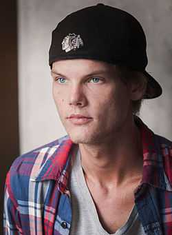

Avicii i en kampanjbild av The Perfect World Foundation år 2014.
Tim Bergling, känd under artistnamnet Avicii, född Tim Lidén den 8 september 1989 i Oscars församling i Stockholm,[1] död 20 april 2018 i Muskat i Oman, var en svensk discjockey, musiker, remixare och musikproducent.